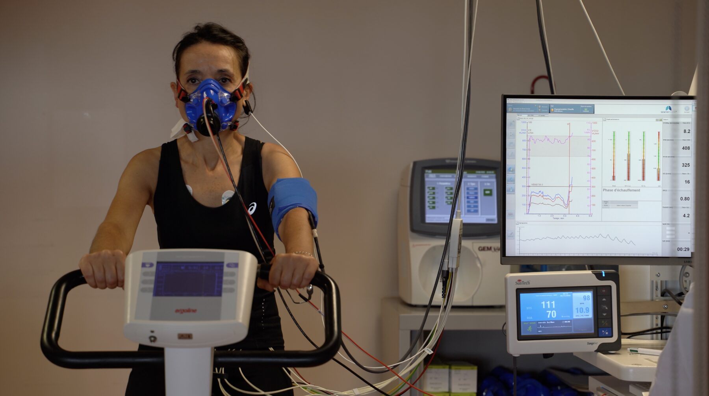
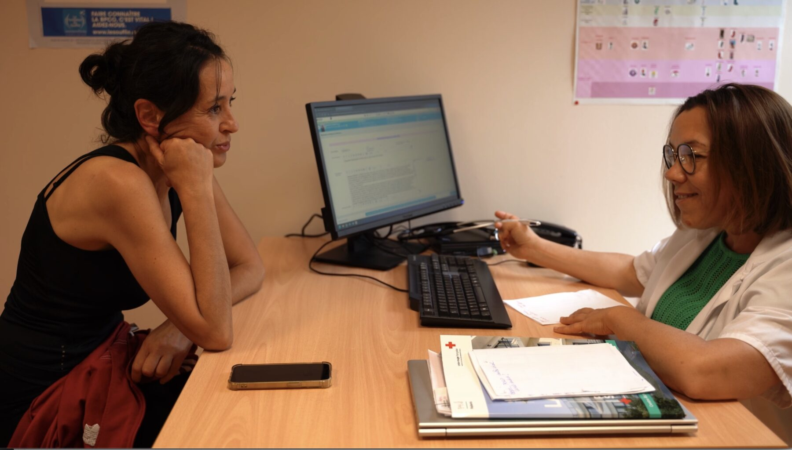
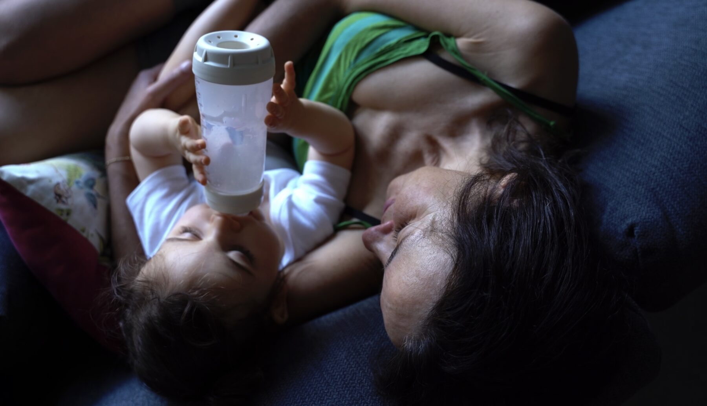
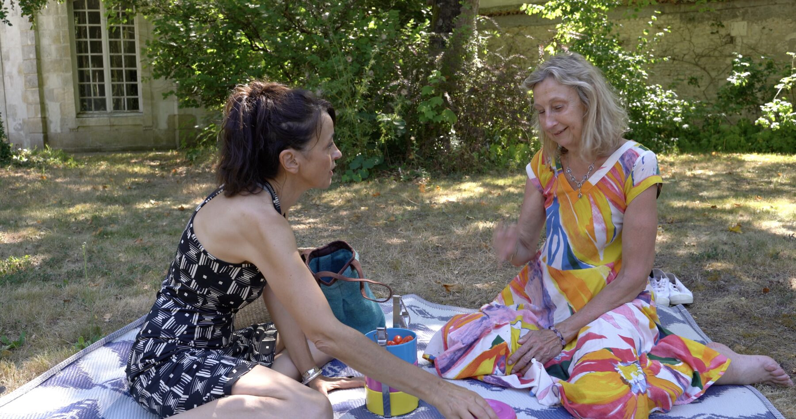
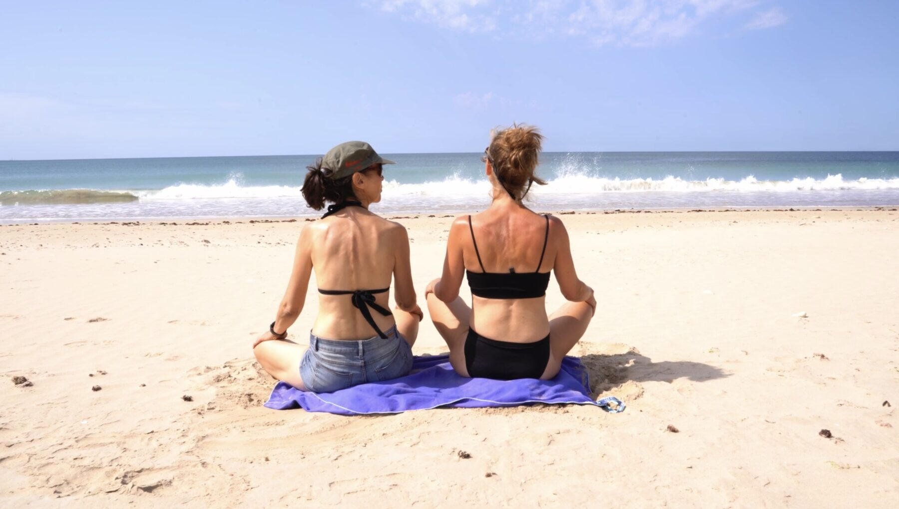
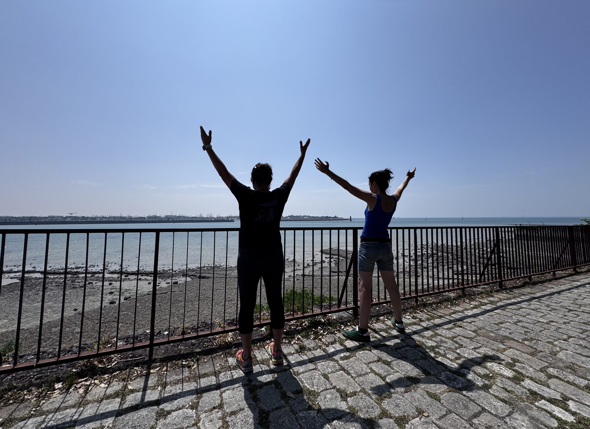

Un récit palpitant, porté par l'énergie vitale d'une femme aux prises avec les aléas de la vie.
A gripping story, carried by the vital energy of a woman grappling with life's twists and turns.

Anne naît avec une maladie pulmonaire rare qui, dès ses 30 ans, lui fait envisager une greffe des deux poumons. Contre toute attente, grâce à un médecin visionnaire et à sa propre volonté, elle parvient à repousser cette échéance pendant plus de vingt ans.
Mais la vie ne lui fait aucun cadeau : un divorce, la perte brutale de son grand amour, le fossé qui se creuse avec son fils… et cette maladie qui s'aggrave inexorablement. À 55 ans, la greffe semble inévitable.
C'est alors que le destin bascule à nouveau : une thérapie qui l'aide à décoder le sens symbolique de sa maladie, l'essai d'un médicament qui décuple ses capacités respiratoires… et surtout une quête intime : comprendre quel pouvoir nous avons vraiment sur notre vie.
Avec ses médecins, sa thérapeute, sa sœur et ceux qui l'ont accompagnée, Anne mène une enquête bouleversante, entre science et spiritualité, entre limites du corps et force insoupçonnée de l'esprit. De ses balades à vélo vers son pneumologue à La Rochelle, à ses retraites dans un monastère bouddhiste, elle trace peu à peu les contours de ce qui pourrait bien être une philosophie du bonheur.
Un récit palpitant, porté par l'énergie vitale d'une femme qui refuse de se laisser définir par la maladie et qui nous invite à repenser nos propres ressources intérieures.
Anne is born with a rare lung disease that, from the age of 30, forces her to face the prospect of a double lung transplant. Against all odds, thanks to a visionary doctor and her own sheer will, she manages to hold that deadline at bay for more than twenty years.
But life spares her nothing: a divorce, the sudden loss of the great love of her life, a growing distance from her son… and a disease that keeps relentlessly worsening. At 55, the transplant finally seems unavoidable.
That's when fate shifts again: a therapy that helps her decode the symbolic meaning of her illness, a trial drug that dramatically boosts her breathing capacity… and above all, an intimate quest — to understand how much power we truly hold over our own lives.
Alongside her doctors, her therapist, her sister and those who have stood by her, Anne leads a gripping investigation at the crossroads of science and spirituality, of the body's limits and the mind's unsuspected strength. From her bike rides to see her pulmonologist in La Rochelle, to retreats at a Buddhist monastery, she gradually traces the outline of what may well be a philosophy of happiness.
A gripping story, carried by the vital energy of a woman who refuses to be defined by illness, and who invites us to rethink our own inner resources.
Oxygène est une enquête sur ce qui nous soutient, nous relie et nous transforme face à l'épreuve. Le film s'articule autour du témoignage d'une vie qui, au fond, nous parle à tous : il nous faut, à un moment ou à un autre, faire face à des épreuves — la question est de savoir comment nous les accueillons. Trois axes traversent le récit : le parcours d'Anne lui-même, fait d'événements qui s'enchaînent et créent des tournants souvent brutaux ; les priorités qu'elle a très vite appris à mettre en place — créativité, connexion aux autres, recul face aux événements, une perception affûtée du monde et de sa propre vie ; et une vision holistique et intégrative de l'existence, y compris de la médecine, qui a produit des résultats concrets dépassant tous les espoirs, révélant une force de l'esprit insoupçonnée et largement sous-utilisée.
Oxygène is an inquiry into what sustains us, connects us, and transforms us in the face of hardship. The film is built around the testimony of one life that, in the end, speaks to us all: sooner or later, we all have to face hardship — the question is how we meet it. Three threads run through the story: Anne's own journey, made of events that chain together into often brutal turning points; the priorities she very quickly learned to put in place — creativity, connection with others, perspective in the face of events, a sharpened perception of the world and of her own life; and a holistic, integrative vision of life, including of medicine, which produced concrete results beyond all hope, revealing an unsuspected and largely underused strength of the mind.

Le parcours d'Anne traverse les protocoles hospitaliers les plus pointus comme les thérapies qui s'intéressent au sens de la maladie. Le film observe, sans naïveté ni dogme, ce que la médecine gagne à s'ouvrir à d'autres formes de savoir sur le corps et l'esprit.
Anne's journey moves through cutting-edge hospital protocols as well as therapies that explore the meaning behind illness. Without naivety or dogma, the film observes what medicine stands to gain by opening itself to other ways of understanding body and mind.

À travers les amis, la famille et les liens tissés au fil des années, le film montre comment le soutien des proches devient une ressource thérapeutique à part entière.
Through friends, family and bonds built over the years, the film shows how the support of loved ones becomes a therapeutic resource in its own right.

Le divorce, le deuil, la relation avec son fils : Anne doit dénouer les fils d'une histoire intime pour avancer. Le film explore comment se réconcilier avec son passé, et avec ceux qui nous ont précédés, peut devenir un acte de guérison.
Divorce, grief, her relationship with her son: Anne must untangle the threads of an intimate history in order to move forward. The film explores how making peace with our past — and with those who came before us — can become an act of healing.

Ce qui distingue Anne n'est pas l'absence d'épreuves, mais la manière singulière dont elle choisit de les traverser : comme des occasions d'apprendre. Cette philosophie, forgée dans la maladie, dessine une véritable philosophie du bonheur.
What sets Anne apart isn't the absence of hardship, but the singular way she chooses to move through it: as an opportunity to learn. This philosophy, forged through illness, sketches out a genuine philosophy of happiness.

Un film écrit par Anne et Blandine Massiet du Biest.
A film written by Anne and Blandine Massiet du Biest.
Blandine Massiet du Biest — réalisatrice, montage. Auteure de Frances Hodgkins : Anything but a Still Life (2023, DOC Edge, Meilleur espoir réalisation et Meilleur son) et de Être and to Be (2016).
Blandine Massiet du Biest — director, editor. Author of Frances Hodgkins: Anything but a Still Life (2023, DOC Edge, Best Emerging Filmmaker and Best Sound) and Être and to Be (2016).
Dossier de présentation, budget prévisionnel et extraits disponibles sur demande.
Pitch document, projected budget and footage samples available on request.